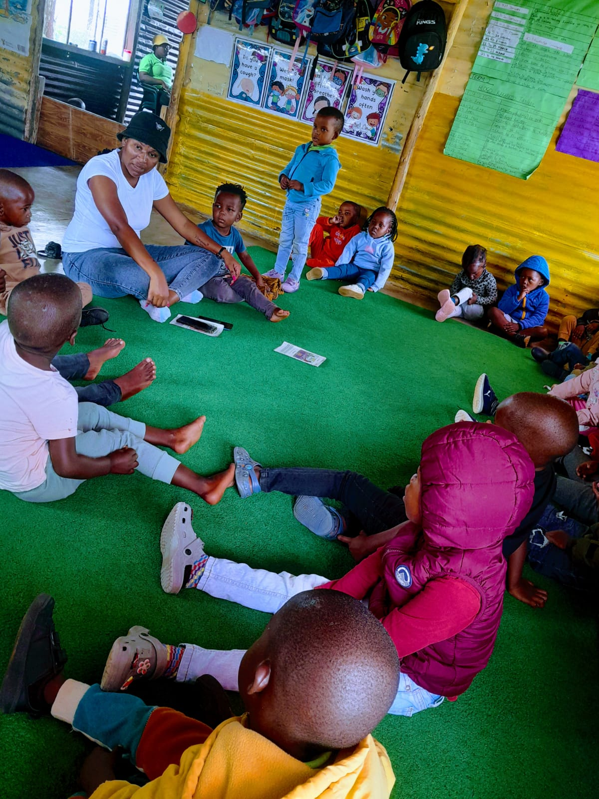

Welcome to Nthabeleng Creche!
Providing a loving and educational environment for your child's early years.
Start Your Enrollment JourneyA day of Discovery
From the moment the doors open at 7:00 AM, our daily program is designed to stimulate, educate, and care for your child. We start with a warm welcome and health care checks, followed by a nutritious breaffast and a morning filled with engaging activities like "Morning Ring" and group focus sessions. Our day includes balanced periods of learning, play, and rest, ensuring every child thrives. Join us for story time, creative play, and more, until departure at 4:00 PM.
Our Programs
Moving On (1 - 4 years)
Our Moving On program supports children as they transition from infact care, fostering growth and development.
Learn MoreTowards Grade R (5 years)
Our Towards Grade R program prepares children for formal schooling by developing literacy, numeracy, and social skills through play-based learning.
Learn More